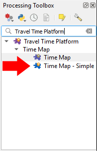

.
.The TravelTime platform plugin mainly consists of a set of algorithms accessible from the processing toolbox.
Start by opening the toolbox, using this button from the toolbar .
The processing toolbox will open. There are currently two algorihtms available. Let's get started with the simplified one. Double click on the simple algorithm :
